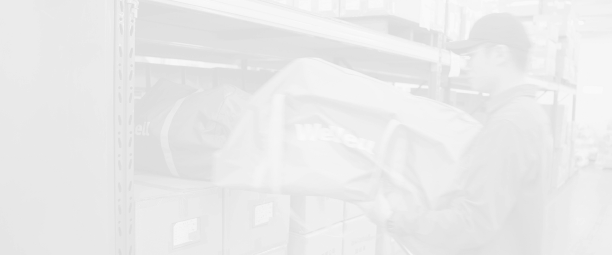
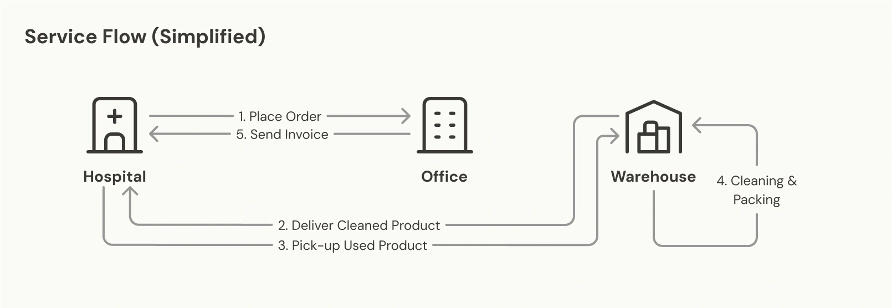
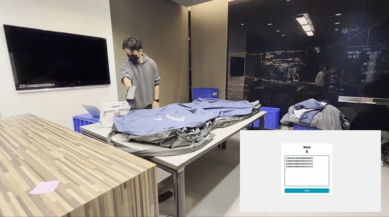

a /
Paper-based workflows led to incomplete records
Rental quantities and dates were recorded on paper. Even with multiple manual checks, providers couldn’t tell whether each product was in the hospital or returned.

This project is under an NDA, so certain user research findings and the final design cannot be disclosed in detail publicly.
KeepWell streamlines decontamination and rental management for medical equipment, with an initial focus on medical air mattresses, pairing barcode asset tags with RFID scanning.
In this portfolio, I focus on workflow “4. Cleaning & packing”. Detailed research findings and final interfaces are shown as placeholders because of the NDA.

a /
Rental quantities and dates were recorded on paper. Even with multiple manual checks, providers couldn’t tell whether each product was in the hospital or returned.
b /
Managers couldn’t easily assess station efficiency, inventory availability, bottlenecks, or future demand.
business
A foundation for future IoT integration with hardware products.
product
Simplify an overloaded system and add RFID for bulk registration.
user
Recording status at each station shouldn’t add extra work.
We measured maximum scanning range, read counts and environmental interference to decide which device fits each workstation.


POS TW/HK Payment Gateway